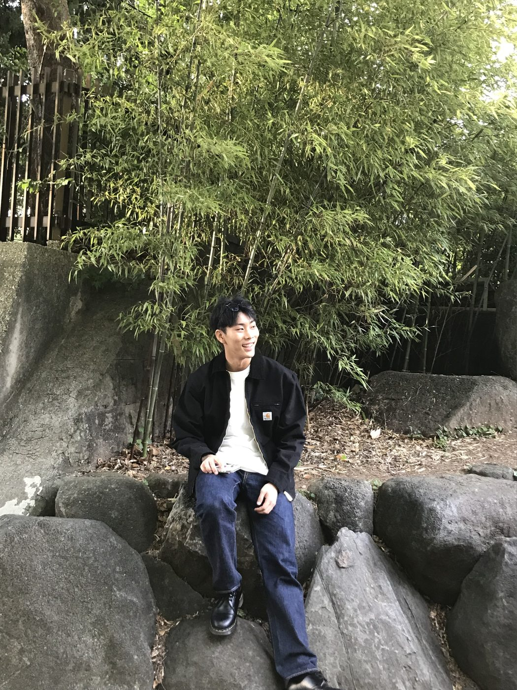
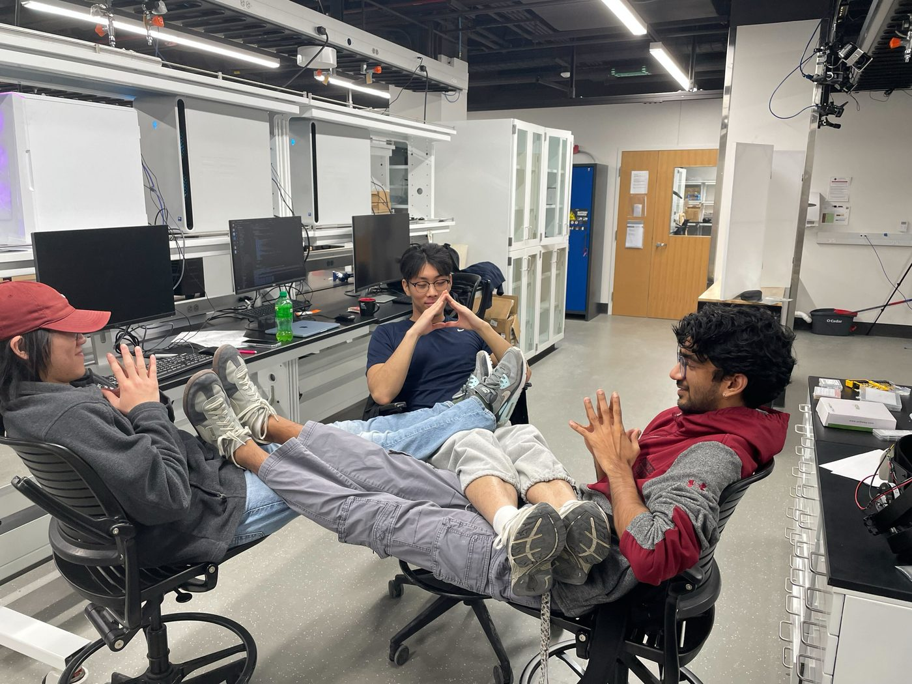
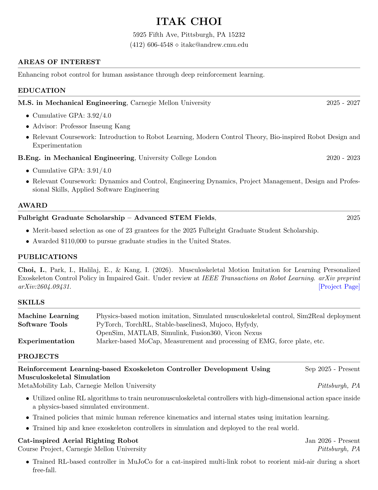
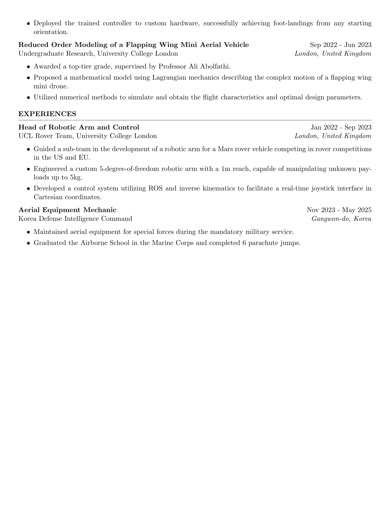

Exoskeleton control from musculoskeletal simulation
Online RL trains neuromusculoskeletal controllers to imitate human kinematics. Hip and knee exo controllers trained this way are then deployed on real hardware.



I'm Itak Choi. I use deep reinforcement learning to make robots better at helping people move, mostly hip and knee exoskeletons.
I'm a Fulbright scholar and M.S. student in Mechanical Engineering at Carnegie Mellon, advised by Professor Inseung Kang in the MetaMobility Lab. I train controllers on musculoskeletal models in simulation, then put them on real exoskeletons.
Before CMU I studied mechanical engineering at UCL, where I led the robotic arm team for the UCL Rover Team, and served in the Korean military, including Marine Corps airborne school.


Online RL trains neuromusculoskeletal controllers to imitate human kinematics. Hip and knee exo controllers trained this way are then deployed on real hardware.
Learning personalized exo policies for impaired gait. With I. Park, E. Halilaj and I. Kang; under review at IEEE Transactions on Robot Learning.
An RL controller trained in MuJoCo turns a multi-link robot over mid-air during a short fall. On the custom hardware it lands feet-first from any starting orientation.
Led the arm and control sub-team: a custom 5-DoF arm with 1 m reach and a 5 kg payload, driven from a joystick in Cartesian space through ROS and inverse kinematics.
A Lagrangian model of a flapping-wing mini aerial vehicle, simulated numerically to find its flight characteristics and best design parameters. Supervised by Professor Ali Abolfathi.
Plain HTML, CSS and a little JavaScript. No framework, no build step.